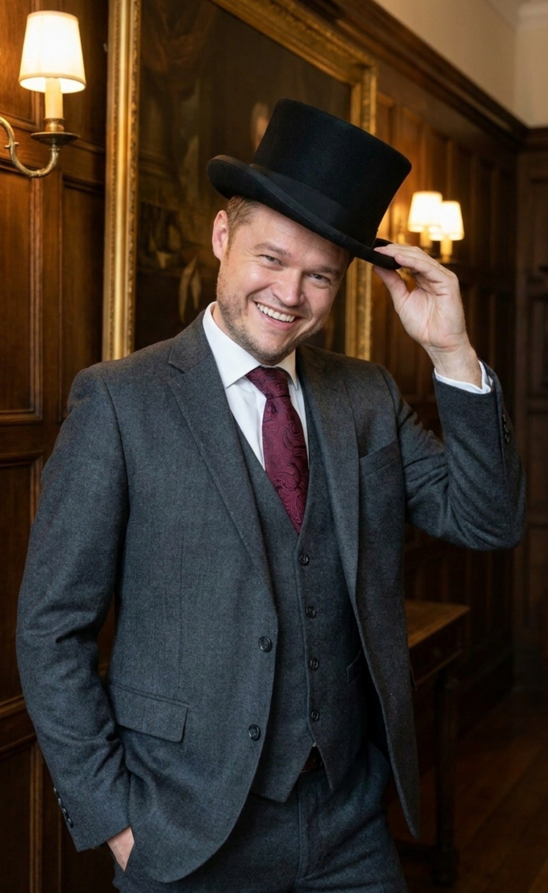

Bestattungen · Stadt und Landkreis Bamberg Kaiser
Wir lassen Sie in Ihrer Trauer nicht alleine.
Individuell und kreativ · Bestattungen auf jedem Friedhof.
0951 30 12 55 81 Jederzeit erreichbar · jetzt anrufenAuch nachts, an Wochenenden und Feiertagen. Mobil unter 0152 54525406.
Sterbefall eingetreten? Rufen Sie uns an · wir übernehmen alles Weitere.
0951 30 12 55 81Sie müssen jetzt nichts organisieren. Das ist unsere Aufgabe.
Ein Anruf genügt. Alles Weitere besprechen wir in Ruhe · bei Ihnen zu Hause oder bei uns in Stegaurach bei Bamberg. Auf Wunsch holen wir Sie ab und bringen Sie wieder nach Hause.
Wir kommen zu jeder Zeit
Nach Ihrem Anruf sind wir innerhalb kurzer Zeit bei Ihnen · ob mitten in der Nacht oder am Feiertag. Wir holen Ihren Angehörigen würdevoll ab und überführen ihn in unsere Räume. Sie müssen dafür nichts vorbereiten.
Wir erledigen die Behördengänge
Sterbeurkunde, Abmeldungen bei Krankenkasse und Rentenstelle, Benachrichtigung der Versicherungen: Wir übernehmen den gesamten Papierweg und sagen Ihnen klar, welche Unterlagen wir dafür brauchen.
Wir gestalten den Abschied mit Ihnen
Trauerfeier, Musik, Blumen, Traueranzeige: Gemeinsam finden wir die Form, die zu dem Menschen passt, von dem Sie sich verabschieden. In Ihrem Tempo, ohne Druck und mit klaren Kosten von Anfang an.

Sven Kaiser. Bestatter aus Berufung.
„Der schöne, verantwortungsvolle und abwechslungsreiche Beruf des Bestatters ist für mich Berufung." Schon mit acht Jahren wollte Sven Kaiser diesen Weg gehen · 2016 gründete er nach seiner Ausbildung zur Bestattungsfachkraft sein eigenes Institut in Stegaurach.
Heute ist er geprüfte Bestattungsfachkraft, Trauerbegleiter, Trauerredner, Ausbilder, Autor und demenzfreundlicher Bestatter · Mitglied im Verband unabhängiger Bestatter. Wir arbeiten provisionsfrei und bilden selbst aus.
Wir beraten Sie gern. Sagen Sie uns einfach, was Ihnen wichtig ist.
Ein Abschied, so einzigartig wie das Leben.
Jeder Mensch ist besonders. Deshalb gestalten wir jede Trauerfeier individuell · und schenken Ihnen Dinge, die bleiben.
Live gesungenes Trauerlied
Ihr persönliches Trauerlied, gesungen von professionellen Musikerinnen und Musikern · die Künstlergage übernehmen wir.
Bleibende Erinnerung
Der Fingerabdruck Ihres Verstorbenen, eingelasert auf einem silbernen Schmuckanhänger · unser Geschenk an Sie. Auf Wunsch gestalten wir zusätzlich ein gebundenes Fotobuch der Beisetzung.
Rund 3.000 Urnen
Eigene Ausstellungsräume mit einer großen Auswahl an Urnen und Särgen · von klassisch bis ausgefallen.
Persönlicher Trauerdruck
Freie Gestaltung Ihres Trauerdrucks mit eigenen Motiven und Bildern · individuell und persönlich dekorierte Trauerfeiern.
Gedenktreff und Trauerbegleitung
Unsere Selbsthilfegruppe für Trauernde ist kostenlos und offen für alle · wir lassen Sie auch nach der Beisetzung nicht allein.
Soziales Engagement
Die Einnahmen unseres Spendenkaffees Frieda spenden wir an Halbwaisen und Vollwaisen · ein Herzensprojekt unseres Hauses.
Preiswert und ehrlich
Günstige Feuerbestattung ab rund 2.759 € · günstige Erdbestattung ab rund 3.044 € (jeweils zuzüglich Fremdleistungen). Vor Ort erhalten Sie ein individuelles schriftliches Angebot · mit allen Kosten von Anfang an.
Starke Partner
FriedWald Ebermannstadt · Ruheforst Coburger Land · Oase der Ewigkeit in den Schweizer Bergen · Deutsche See-Bestattungsgenossenschaft · BT Bestattungstreuhand für die Finanzierung.
Jederzeit erreichbar · auch an Sonn- und Feiertagen.
0951 30 12 55 81Rufen Sie an, wann immer Sie uns brauchen. Nachts erreichen Sie keine Bandansage, sondern uns.
- Adresse Kaiser Bestattungen · Brückenstraße 5 · 96135 Stegaurach
- E-Mail info@kaiser-bestattungen.com
- Mobil 0152 54525406
Anfahrt: Sie finden uns in der Brückenstraße 5 in Stegaurach, Ortsteil Mühlendorf · wenige Minuten von Bamberg.
Route mit Google Maps planenSchreiben Sie uns
Wir melden uns zeitnah bei Ihnen · in dringenden Fällen rufen Sie bitte direkt an.